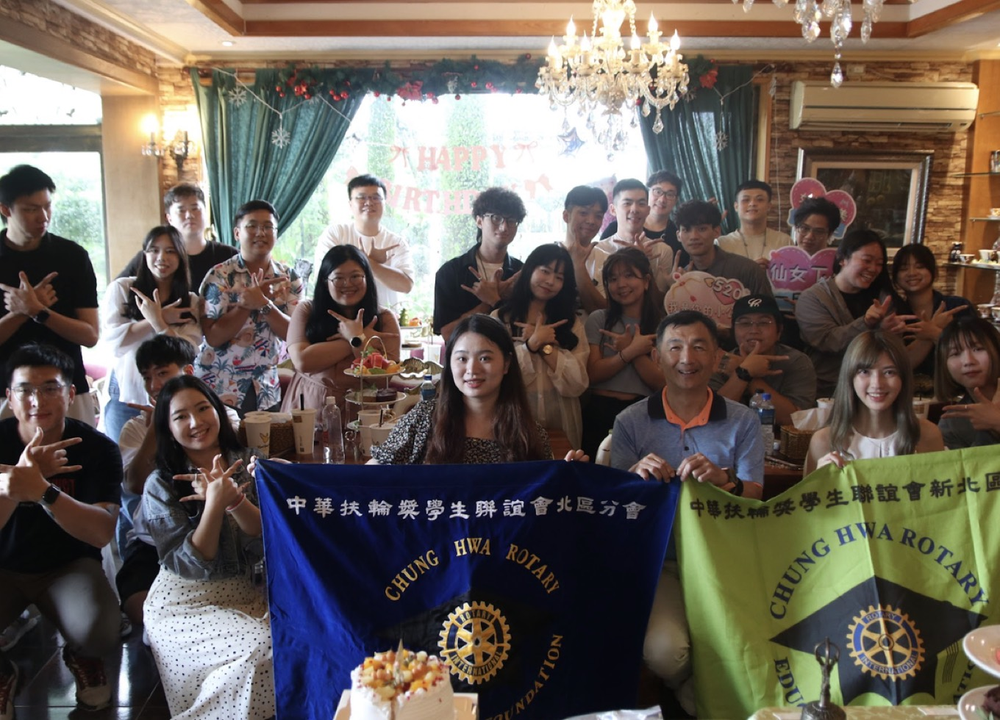

Rotary Yearbook 2025-2026
把年度內容整理成兩個清楚頁面，分開慢慢看。
這個版本把網站整理成更清楚的分頁結構。 活動頁 專門看 2025.06 到 2026.05 的年度時間軸與活動照片， 會長介紹頁 則集中整理婉華與詠文的正式資料與年度回顧，手機上也會更順。
網站分頁
首頁總覽
活動時間軸
會長介紹
Annual Navigation
One Rotary Year, Split Into Clear Chapters.
把原本長頁內容拆成不同入口後，查活動、看照片、讀會長介紹都會更直接，也比較適合分享給別人看。

Activities
年度活動時間軸

2025.07
聯合幹部訓練

2026.05
直播講座例會
首頁總覽
先快速理解這個年度站的閱讀方式、頁面分工與整體氣質。
活動頁
沿著直線時間軸順讀 12 個月份活動，直接點開看每月內容。
會長介紹
把婉華與詠文的正式資料、角色定位與年度摘要集中在同一頁。
Page Directory
兩個主頁面，分開讀完整個年度。
一頁專心看活動，一頁專心看會長，首頁則保留年度總覽與入口。
Viewing Note
閱讀方式建議
如果想先快速確認整年的節奏，從 活動頁 進去最直覺；如果是要對外介紹本年度主軸與會長，則可直接使用 會長介紹頁 分享。